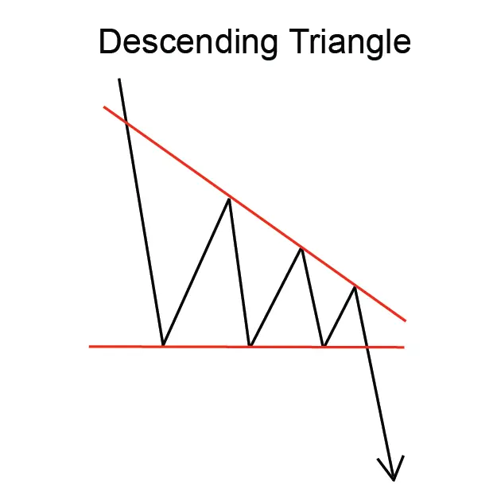
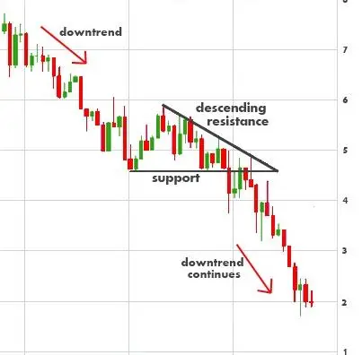

Descending Triangle पैटर्न एक रिवर्सल चार्ट पैटर्न होता है जो एक डाउनट्रेंड के अंत में गठित होता है।
पैटर्न में एक त्रिकोण या ह्रासमान उच्चाई और ह्रासमान निम्नता की तरह दिखता है, जिसके कारण इसका नाम होता है।
Descending Triangle पैटर्न एक संभावित पतन की संकेत देता है, और ट्रेडर्स व्यापार का मौका मानते हुए इसे उपयोग करते हैं।
पैटर्न में प्रवेश करने के लिए, ट्रेडर्स आमतौर पर त्रिकोण के नीचे एक 'ब्रेकआउट' ढूंढ़ते हैं,
जो त्रिकोण की उच्चाई समान दूरी पर होता है।
त्रिकोण की लंबाई त्रिकोण की नीच से त्रिकोण की शीर्ष तक उच्चाई की मात्रा होती है।
त्रिकोण की चौड़ाई समय की व्यवस्था होती है जहां त्रिकोण गठित होता है।
Descending Triangle पैटर्न एक निर्भर रिवर्सल पैटर्न नहीं है, लेकिन यह एक संकेत देता है कि एक पतन के मौके में हो सकता है,
और ट्रेडर्स व्यापार का मौका मानते हुए इसे उपयोग करते हैं।
